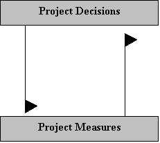

Introduction
The Measurement Information Model described in Practical Software & Systems Measurement is one of the
fundamental concepts inherent to a successful, information-driven measurement program. The Measurement Information
Model is a mechanism for linking defined information needs to the project software processes and products, the entities
that can actually be measured. It establishes a defined structure for relating measurement concepts and, as such,
provides a basis for accurately communicating measurement results within the organization.
Measurement Information Model
The Measurement Information Model is a primary resource within the measurement process. It provides a structure that
defines and relates specific project measures to the needs of project decision makers. It provides a well-defined
analysis path that supports recommendations derived from the analysis of the collected data. The Measurement
Information Model directly supports both measurement planning and analysis activities.

Measurement Information Model Relationships
During the planning and execution phases of a software project, technical and management decisions must be made on a
continuing basis addressing many different areas. Decision makers must make tradeoff decisions between cost, schedule,
capability, and quality. As a result, there is a definitive need for information to support the decision-making
process. The Measurement Information Model helps to define and focus the information needs of the project decision
makers, and focuses measurement planning activities on the selection and specification of the most appropriate software
measures to address those needs. As the measures are implemented and data is collected, the Measurement Information
Model structures the measurement data and associated analysis into structured information products. These information
products integrate the measurement results with established decision criteria, and they present recommendations to
project decision-makers on alternative courses of action.

In a typical software project, there are many information needs defined at any point in time. These information needs
tend to change significantly during the course of the project, based on changing project objectives, assumptions, and
constraints.
Measurement Construct
The Measurement Information Model shows the relationship between the terms, and explain their definitions. The
measurement construct, is, in a sense, a complete Measurement Information Model for a particular measure. Thus, the
Measurement Information Model is the definition of terms (in the general sense), and the measurement construct is
an instantiation of the information model for an actual measure.
|